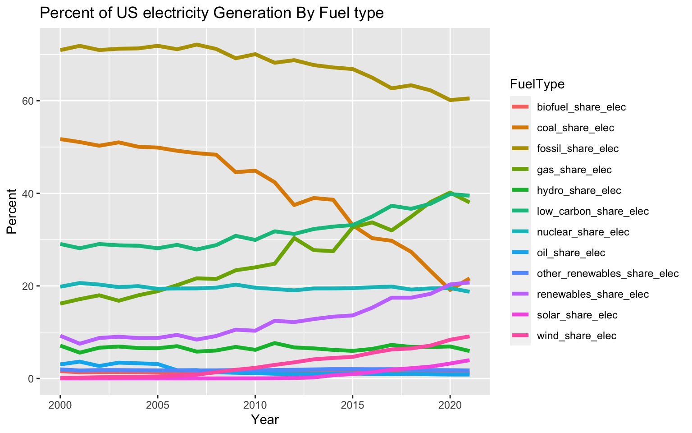
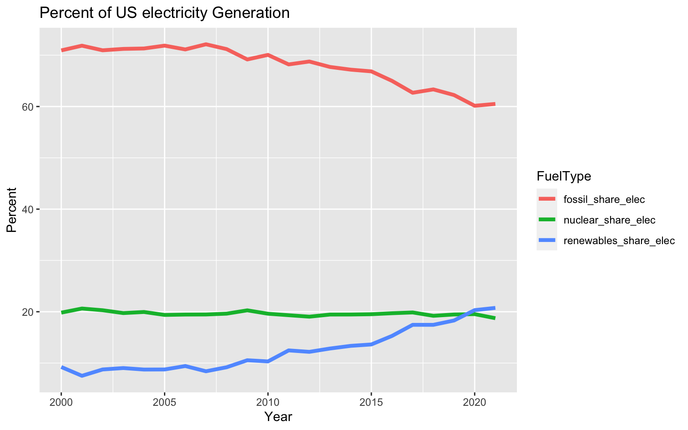
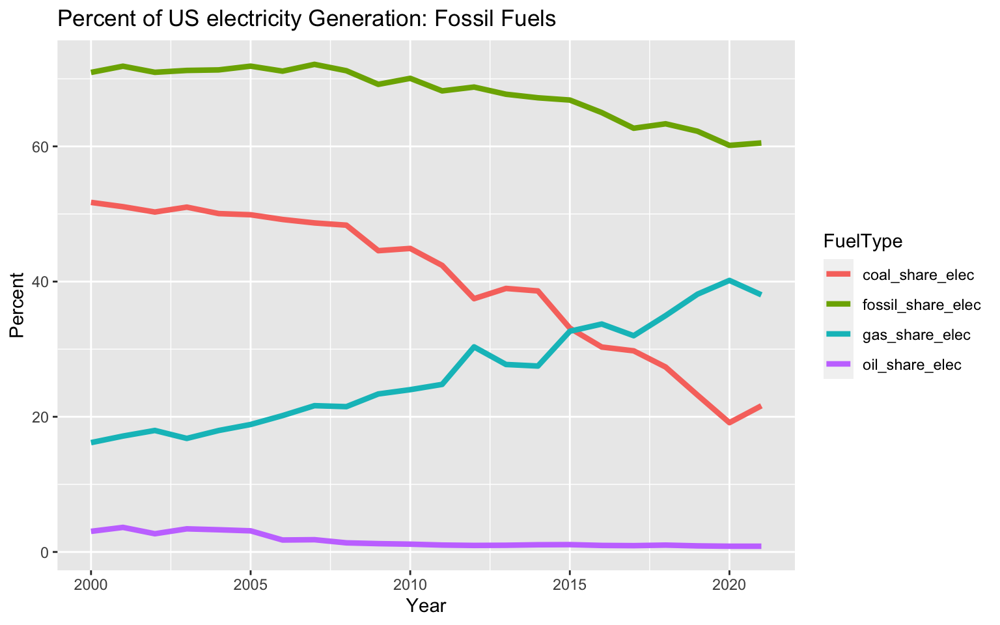
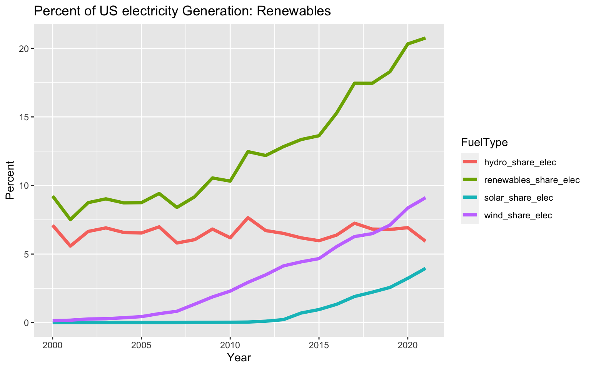

In this document I’ll analyze and visualize some energy data that were the focus of Tidy Tuesday2023 week 23. The data comes from Our World In Data and the full data set is available here. Data Source Citation: Ritchie, Roser, and Rosado (2022).
Analysis and Visualization
I’ll start by loading libraries (tidyverse) and the data set. The result is a dataframe with a row for each country and year, from 1900-2002.
# A tibble: 6 × 129
country year iso_code population gdp biofuel_cons_change_pct
<chr> <dbl> <chr> <dbl> <dbl> <dbl>
1 United States 2000 USA 282398560 1.30e13 14.6
2 United States 2001 USA 285470496 1.31e13 6.24
3 United States 2002 USA 288350240 1.33e13 19.5
4 United States 2003 USA 291109824 1.37e13 35.7
5 United States 2004 USA 293947872 1.42e13 26.2
6 United States 2005 USA 296842656 1.47e13 16.8
# ℹ 123 more variables: biofuel_cons_change_twh <dbl>,
# biofuel_cons_per_capita <dbl>, biofuel_consumption <dbl>,
# biofuel_elec_per_capita <dbl>, biofuel_electricity <dbl>,
# biofuel_share_elec <dbl>, biofuel_share_energy <dbl>,
# carbon_intensity_elec <dbl>, coal_cons_change_pct <dbl>,
# coal_cons_change_twh <dbl>, coal_cons_per_capita <dbl>,
# coal_consumption <dbl>, coal_elec_per_capita <dbl>, …
Share of electricity generation by fuel type
For this analysis, I’ve chosen to investigate how the mix of fuel types used to generate electricity has changed over time. We need to reduce carbon emissionsIn order to prevent or mitigate the effects of climate change, and electricity generation is a large component of these emissions. I’m interested to see what progress has been made in transitioning to more renewable/low-carbon fuels for electricity generation.
Conveniently, the data already contain fields for the share of total electricity generation for each fuel type! I’ll make a new data frame with just these fields. I can select these columns (all ending in share_elec), using the ends_with function from the Wickham et al. (2023) package.
Now I have a dataframe with just the variables I want to plot, but the format isn’t ideal; I would have to specify/plot each variable separately. What I want to do is give a single plot command and group/color the lines by the variable (fuel type). To achieve this, I am going to pivot the data frame from wide to long format. I believe this was previously referred to as gather or melt.
Now my dataframe has a row for each year, fuel type, and value, and I can simply group or color by the fuel type when I plot.
Code
usa_share%>%ggplot(aes(year,Percentage))+geom_line(aes(color=FuelType),linewidth=1.5)+ggtitle("Percent of US electricity Generation By Fuel type")+xlab("Year")+ylab("Percent")

Timeseries of the percent of total US electricty generation by fuel type.
Here we finally have a plot of the share of electricity generation by fuel type. We can see that the share of fossil fuels and coal has decreased, and renewable have increased. But there’s a lot on this plot and it’s hard to read, so I’ll focus down on some more specific subsets of the data.
Total Fossil, renewables, and nuclear shares
First we can look at the total shares of fossil (oil,coal, gas), renewable (wind, solar, hydro), and nuclear generation. Grouping into these categories de-clutters the plot and makes it easier to interpret.
Code
usa%>%select(year,fossil_share_elec,renewables_share_elec,nuclear_share_elec)%>%tidyr::pivot_longer(cols=dplyr::ends_with('share_elec'), names_to='FuelType', values_to ='Percentage')%>%ggplot(aes(year,Percentage))+geom_line(aes(color=FuelType),linewidth=1.5)+ggtitle("Percent of US electricity Generation")+xlab("Year")+ylab("Percent")

Observations from this plot:
Fossil fuel share has been decreasing steadily since about 2007
Renewable share has been increasing steadily since about 2007
Nuclear has remained relatively constant at around 20%.
Fossil share remains the majority of generation, but is decreasing. Renewables became approximately equal to nuclear around 2020 and are continuing to increase.
Breakdown of fossil fuel shares
In this dataset, fossil fuels include coal, gas, and oil.
Code
usa%>%select(year,fossil_share_elec,oil_share_elec,gas_share_elec,coal_share_elec)%>%tidyr::pivot_longer(cols=dplyr::ends_with('share_elec'), names_to='FuelType', values_to ='Percentage')%>%ggplot(aes(year,Percentage))+geom_line(aes(color=FuelType),linewidth=1.5)+ggtitle("Percent of US electricity Generation: Fossil Fuels")+xlab("Year")+ylab("Percent")

Observations from this plot:
We can see that the fossil fuel share of electricity generation has been decreasing, starting around 2008.
Coal and gas make up the majority of the fossil fuel generation.
Coal share has been decreasing while the gas share has increased. Coal was much higher than gas previously, but their shares became equal around 2015 and gas now makes up a larger share of the fossil fuel generation.
Renewables breakdown
In this dataset, renewables include wind, solar, and hydro.
Code
usa%>%select(year,renewables_share_elec,solar_share_elec,hydro_share_elec,wind_share_elec)%>%tidyr::pivot_longer(cols=dplyr::ends_with('share_elec'), names_to='FuelType', values_to ='Percentage')%>%ggplot(aes(year,Percentage))+geom_line(aes(color=FuelType),linewidth=1.5)+ggtitle("Percent of US electricity Generation: Renewables")+xlab("Year")+ylab("Percent")

Observations from this plot:
The share of renewable electricity production has increased sharply, approximately doubling from 2008 to 2020.
The share of hydro generation has remained relatively constant.
Solar and wind shares have increased significantly.
Wind started to increase earlier, around 2005.
Solar started increasing around 2012
References
Ritchie, Hannah, Max Roser, and Pablo Rosado. 2022. “Energy.”Our World in Data.
Wickham, Hadley, Romain François, Lionel Henry, Kirill Müller, and Davis Vaughan. 2023. “Dplyr: A Grammar of Data Manipulation.”https://CRAN.R-project.org/package=dplyr.
Source Code
---title: "Tidy Tuesday Energy Analysis"bibliography: references.bibimage: image.jpgdate: "2023-06-17"categories: [energy, TidyTuesday, R, visualization]format: html: code-link: true code-fold: show---# Tidy Tuesday: Energy (2023 - Week 23)## IntroductionIn this document I'll analyze and visualize some energy data that were the focus of *T[idy Tuesday](https://github.com/rfordatascience/tidytuesday/tree/master/data/2023/2023-06-06)*[2023 week 23](https://github.com/rfordatascience/tidytuesday/tree/master/data/2023/2023-06-06). The data comes from [Our World In Data](https://ourworldindata.org/about) and the full data set is available [here](https://github.com/owid/energy-data). Data Source Citation: @owidenergy.## Analysis and VisualizationI'll start by loading libraries (tidyverse) and the data set. The result is a dataframe with a row for each country and year, from 1900-2002.```{r Load Data}suppressPackageStartupMessages(library(tidyverse))owid_energy <- readr::read_csv('https://raw.githubusercontent.com/rfordatascience/tidytuesday/master/data/2023/2023-06-06/owid-energy.csv',show_col_types =FALSE)head(owid_energy)```- How many countries are in the dataset?```{r}length(unique(owid_energy$country))```That's a lot! I'll focus on just the United States for now.- I also noticed that the data set goes back to 1900 but a a lot of the data for earlier years are missing/NA so I'll filter those out as well.- It looks like we have data for the USA from 2000-2021.Make a new dataframe for just the USA data and remove years without data.```{r}usa <- owid_energy %>%filter(country=="United States") %>%filter(!is.na(electricity_demand))head(usa)```### Share of electricity generation by fuel typeFor this analysis, I've chosen to investigate how the mix of fuel types used to generate electricity has changed over time. We need to reduce carbon emissionsIn order to prevent or mitigate the effects of climate change, and electricity generation is a large component of these emissions. I'm interested to see what progress has been made in transitioning to more renewable/low-carbon fuels for electricity generation.Conveniently, the data already contain fields for the share of total electricity generation for each fuel type! I'll make a new data frame with just these fields. I can select these columns (all ending in *share_elec*), using the *ends_with* function from the @dplyr package.```{r}usa %>%select(year,dplyr::ends_with('share_elec')) %>%head()```Now I have a dataframe with just the variables I want to plot, but the format isn't ideal; I would have to specify/plot each variable separately. What I want to do is give a single plot command and group/color the lines by the variable (fuel type). To achieve this, I am going to pivot the data frame from wide to long format. I believe this was previously referred to as *gather* or *melt*.```{r}usa_share <- usa %>%select(year,ends_with('share_elec')) %>% tidyr::pivot_longer(cols=ends_with('share_elec'),names_to='FuelType',values_to ='Percentage')head(usa_share)```Now my dataframe has a row for each year, fuel type, and value, and I can simply group or color by the fuel type when I plot.```{r}#| label: share-all#| fig-alt: Timeseries of the percent of total US electricty generation by fuel type.#| fig-width: 8#| fig-cap: Timeseries of the percent of total US electricty generation by fuel type.usa_share %>%ggplot(aes(year,Percentage))+geom_line(aes(color=FuelType),linewidth=1.5)+ggtitle("Percent of US electricity Generation By Fuel type")+xlab("Year")+ylab("Percent")```Here we finally have a plot of the share of electricity generation by fuel type. We can see that the share of fossil fuels and coal has decreased, and renewable have increased. But there's a lot on this plot and it's hard to read, so I'll focus down on some more specific subsets of the data.### Total Fossil, renewables, and nuclear sharesFirst we can look at the total shares of fossil (oil,coal, gas), renewable (wind, solar, hydro), and nuclear generation. Grouping into these categories de-clutters the plot and makes it easier to interpret.```{r}#| label: share-fossil-renewable-nuclear#| fig-alt: Timeseries of the percent of total US electricty generation by fuel types.#| fig-width: 8usa %>%select(year,fossil_share_elec,renewables_share_elec,nuclear_share_elec) %>% tidyr::pivot_longer(cols=dplyr::ends_with('share_elec'),names_to='FuelType',values_to ='Percentage') %>%ggplot(aes(year,Percentage))+geom_line(aes(color=FuelType),linewidth=1.5)+ggtitle("Percent of US electricity Generation")+xlab("Year")+ylab("Percent")```Observations from this plot:- Fossil fuel share has been decreasing steadily since about 2007- Renewable share has been increasing steadily since about 2007- Nuclear has remained relatively constant at around 20%.- Fossil share remains the majority of generation, but is decreasing. Renewables became approximately equal to nuclear around 2020 and are continuing to increase.### Breakdown of fossil fuel shares- In this dataset, fossil fuels include coal, gas, and oil.```{r Plot fossil fuel shares}#| label: share-fossil#| fig-alt: Timeseries of the percent of total US electricty generation by fossil fuels.#| fig-width: 8usa %>%select(year,fossil_share_elec,oil_share_elec,gas_share_elec,coal_share_elec) %>% tidyr::pivot_longer(cols=dplyr::ends_with('share_elec'),names_to='FuelType',values_to ='Percentage') %>%ggplot(aes(year,Percentage))+geom_line(aes(color=FuelType),linewidth=1.5)+ggtitle("Percent of US electricity Generation: Fossil Fuels")+xlab("Year")+ylab("Percent")```Observations from this plot:- We can see that the fossil fuel share of electricity generation has been decreasing, starting around 2008.- Coal and gas make up the majority of the fossil fuel generation.- Coal share has been decreasing while the gas share has increased. Coal was much higher than gas previously, but their shares became equal around 2015 and gas now makes up a larger share of the fossil fuel generation.### Renewables breakdown- In this dataset, renewables include wind, solar, and hydro.```{r Plot Renewables Shares}#| label: share-renewable#| fig-alt: Timeseries of the percent of total US electricty generation renewable fuels.#| fig-width: 8usa %>%select(year,renewables_share_elec,solar_share_elec, hydro_share_elec,wind_share_elec) %>% tidyr::pivot_longer(cols=dplyr::ends_with('share_elec'),names_to='FuelType',values_to ='Percentage') %>%ggplot(aes(year,Percentage))+geom_line(aes(color=FuelType),linewidth=1.5)+ggtitle("Percent of US electricity Generation: Renewables")+xlab("Year")+ylab("Percent")```Observations from this plot:- The share of renewable electricity production has increased sharply, approximately doubling from 2008 to 2020.- The share of hydro generation has remained relatively constant.- Solar and wind shares have increased significantly. - Wind started to increase earlier, around 2005. - Solar started increasing around 2012## References